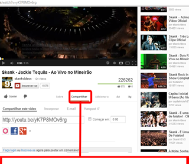
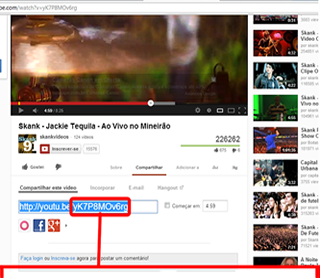

1- Selecione um vídeo da sua escolha.

2- clique em compartilhar como mostrado na exemplo acima.

3- Copie essa parte do link e cole no sistema.
Ou seja, esse link
http://youtu.be/yK7P8MOv6rg
Ficaria assim:
yK7P8MOv6rg